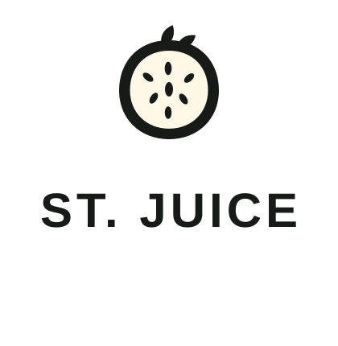
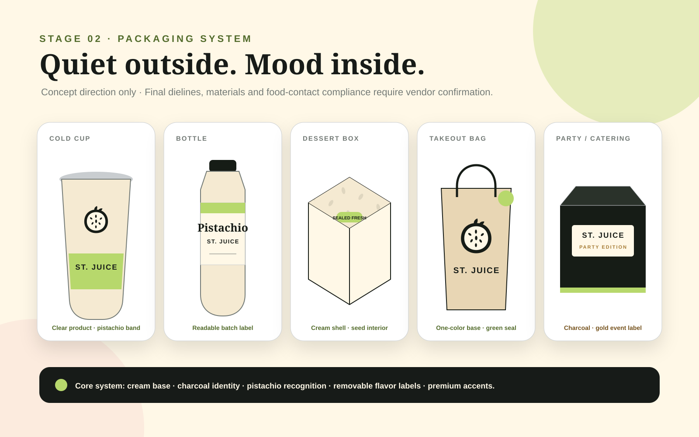

{kind=link}
#B7D86CSTAGE 02 · BRAND SYSTEM
Fresh energy.
Sweet mood.
Pistachio luxury with fruit-first energy—built for juice, chocolate, late-night dessert and every account mode.
01 · COLOR
Pistachio leads.
Product color performs.
Warm cream makes the system inviting. Charcoal adds night energy. Chrome stays restrained.
#FFF8E7#171B18#C9CDD0#1747B5#A67C36#D94D78#F18B4302 · TYPOGRAPHY
Editorial appetite.
Effortless ordering.
Made fresh.
Finished sweet.
Pistachio Saint
Cold, creamy and layered with roasted pistachio flavor.
From $—
03 · IDENTITY
One slice.
Built to travel.
Saint Slice is an original dragon-fruit-inspired mark designed for cups, seals, social icons, storefront vinyl and digital interfaces.


04 · COMPONENTS
Clear enough to order.
Strong enough to remember.
Actions
Badges
Best Seller
New
Student
Catering
System icons
Dragon Glow
Dragon fruit, citrus and a bright chilled finish.
From $—
05 · ACCOUNT THEMES
One brand.
Three relevant modes.
Theme changes accent, offers and merchandising—not the catalog, accessibility or checkout logic.
Your everyday mood.
Fresh discovery, rewards and fast reordering.
Study-night fuel.
Verified offers, bundles, voting and campus-area drops.
Bring the whole table.
Party boxes, scheduled service, gifting and quote tools.
06 · PATTERN
Seed Orbit
A low-contrast rhythm for tissue, sleeves, box interiors and large quiet fields. Never behind order-critical text.
07 · PACKAGING
Quiet outside.
Mood inside.
A consistent shell keeps the brand recognizable. Removable labels, sleeves and interior color carry flavors, drops and account moments.

Concept only. Not a manufacturing dieline.